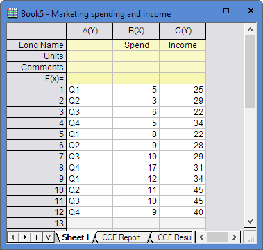
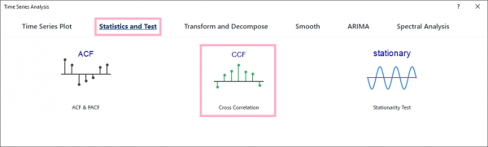
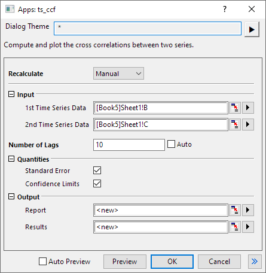
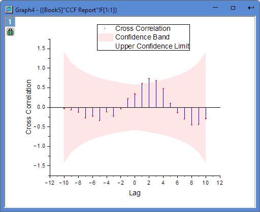
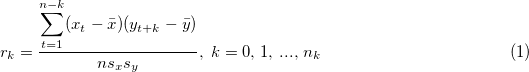
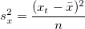
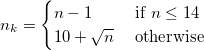
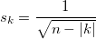

This CCF (Cross Correlation function) tool is supported in the Time Series Analysis App. It is used to compute and plot the cross correlations between two series.
This tutorial uses App’s built-in sample project. To open this sample OPJU file:




Cross correlation calculates the correlation between two time series with different lags. It can be used to identify lags of one time series so that it can be the predictor of the other time series.
This app calls nag_tsa_cross_corr (g13bcc) function [1] to calculate.
Given two time series xi, yi, i = 1, 2, ..., n, the cross correlations between xt and yt with lags can be calculated as:

where  and are means of time series xi and yi, sx and sy are standard deviations of time series xi and yi,
and are means of time series xi and yi, sx and sy are standard deviations of time series xi and yi,

and similarly for sy.
For lag k<0, it can be calculated by exchange time series xi and yi in Equation (1).


Lower confidence limit at lag k:

Upper confidence limit at lag k: